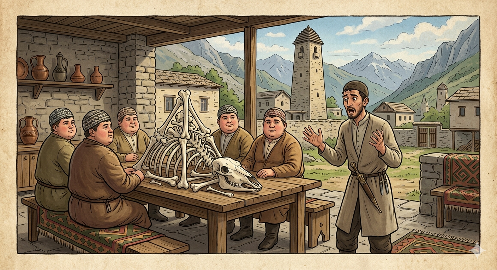

И.А. Дахкильгов. Хьехаме дувцарш - поучительные рассказы-притчи.
И.А. Дахкильгов. Хьехаме дувцарш - поучительные рассказы-притчи. Из ингушского фольклора.

Бизача мутаӀаламех лорадолда вай
Мархаш доастача дийнахьа шоай цхьан тоабанца лелаш хиннаб мутаӀаламаш. Шоайцара цхьа мутаӀалам вуташ хиннавац цар, хье волча хьоашалгӀа тхо чу маца дех Ӏа, яхаш. ХӀана аьлча, цӀаьрмата хиннав из. Коара коа ухаш, марха къоабал дувцаш, чу мел бахача шунага кховдаш хиннаб мутаӀаламаш. Хоз дикка уж бизаб, аьнна, шийна хетача хана, цар ца вуташ кхеставаьча мутаӀаламо шоашкахьа чуберзабаьб уж. Чубаьнна, Ӏохайна, шун тӀа мел дар хьеккха дӀадиад мутаӀаламаша. ТӀехкий гув мара хӀама йитаяц. Циггач аьннад, йоах, цу цӀаьрматача мутаӀаламо: Далла лорадолда вай бизача мутаӀаламех!
РУССКИЙ
Упаси нас от сытых муталимов
Муталимы - учащиеся исламского богословия - в праздник уразы стали ходить по дворам и лакомиться праздничными угощениями. Среди них был один, которого они постоянно допекали вопросом, когда же он пригласит их к себе в гости. Ходили муталимы по многим дворам, и в каждом доме угощались. Тот муталим, которому не давали покоя, решил, что все они предельно сыты, тогда он и повел их к себе. Муталимы так переусердствовали за его столом, что кроме груды костей, на столе ничего не оставили. Вот тут-то, говорят, и воскликнул жадный муталим: "Упаси нас от сытых муталимов!"
ENGLISH
Deliver us from the well-fed mutalims
The mutallims - students of Islamic theology - began to go from house to house on the festival of Eid al-Fitr, tucking into the festive treats. Among them was one whom the others constantly pestered with the question of when he would invite them to his home. The mutalims visited many courtyards and were treated to food in every house. The mutalim who had been pestered so much decided that they were all as full as could be, so he led them to his own home. The mutalims overindulged so much at his table that they left nothing but a pile of bones. It was then, they say, that the greedy mutalim exclaimed: 'May we be spared from well-fed mutalims!'
НОХЧИЙН
ПОГОВОРКИ
Балха – мекъа, худара – кадай волчох вай лорадолда. Упаси нас от тех, кто на работу ленив, а кашу есть прыток. May we be spared those who are lazy at work but quick to eat porridge. Балхан - мела, хударан - каде волчух вай ларадойла.ВаттӀалца ца а юаш, виззалца яа. Не ешь столько, что можешь лопнуть, а ешь досыта. Don't eat till you burst — eat till you're full. ВаттӀалца ма йууш, вуззалца йаа.Визачул тӀехьагӀа йиар шайтӀана кхаьчай. То, что едят после насыщения, достается шайтану (черту). What is eaten after one is already full goes to the devil. Вуьзначул тӀаьхьа йиънарг шайтӀана кхаьчна.ДӀадилари къайладихьари хьай да хьа. Припасенное и припрятанное – твое. What you set aside and hid away is truly yours. ДӀадиллинаргий къайладаьккхинаргий хьай ду хьан.Къувсаш ца диар даар а дац. Еда вкусна, когда ешь, опережая других. Food eaten without racing others isn't truly enjoyed. Къуьйсуш ца диънарг даар а дац.Ловзар дӀадаьнначул тӀехьагӀа лекха пандар эшаш хиннабац. Нечего играть на гармони, когда вечеринка уже закончилась. There's no use playing loud music once the party has already ended. Ловзар дӀадаьллачул тӀаьхьа лекхна пондар оьшуш хилла бац.Молла, ше виза ваьттӀача а, дуачун чам мишта ба хьажа гӀийртав. Лопаясь от переедания, мулла пытался снять пробу с очередного блюда. Even bursting from having eaten his fill, the mullah still tried to sample every other dish. Молла, ша вуьзна ваьттӀача а, дуучун чам муха бу хьажа гӀиртина.МоцагӀа яьхад: “Далла лорадолда вай бизаьча мутаӀаламех”. Некогда поговаривали: “Упаси нас бог от сытых муталимов”. They used to say: "May God spare us from students who are too well-fed." Мацах баьхна: "Далла ларадойла вай буьзначу мутаӀеламех".Низ болча хьакхо наькъ юккъера а баьккхаб ӀаӀа. Сильная свинья вырыла съедобный корень, росший посреди укатанной дороги. A strong pig dug up an edible root even in the middle of a well-trodden road. Ницкъ болчу хьакхо некъан йуккъера а баьккхина ӀаьӀ.ТӀехьависачун дакъа циско (цискаша) диад. Долю опоздавшего кошка (кошки) съела (съели). The latecomer's share was eaten by the cat (or cats). ТӀаьхьависначун дакъа цициго (цицигаш) диъна.ХӀама диача, наб тӀагӀорт; набарах ваьлча, хӀама яа дага отт, - бала ба-кха. Поешь – спать тянет; поспишь – есть охота – ох, как трудно жить. Eat, and sleep tugs at you; wake from sleep, and food is on your mind — such is the trouble of life. ХӀума йиӀча, наб тӀегӀоьрту; набарах ваьлча, хӀума йаа дага хӀутту, - бала бу-кха!“Хьада” яхар кӀордаваьв, “дӀаэца” яхар вийзав. Просящий надоел, дающий любим. The one who kept asking became tiresome; the one who kept giving stayed beloved. "Схьада" бохург кӀордадина, "дӀаэца" бохург вуьзна.Цхьан циско ийс етт биаьб. Одна кошка съела девять коров. One cat ate nine cows. Цхьана цициго исс етт биъна.